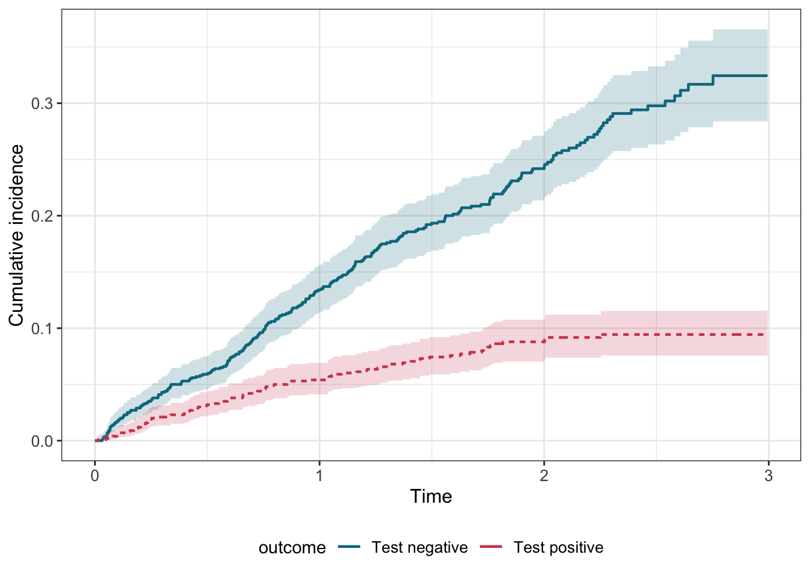
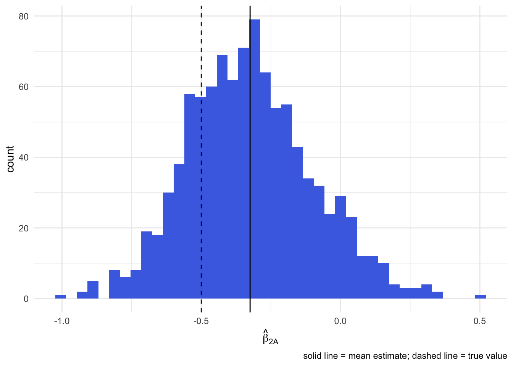
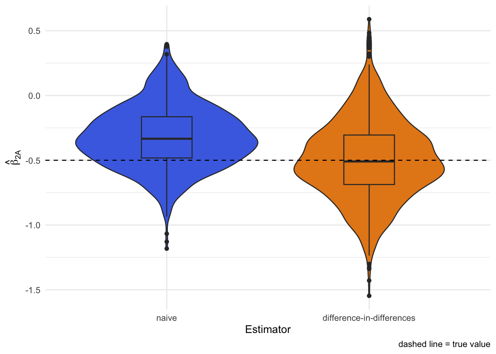
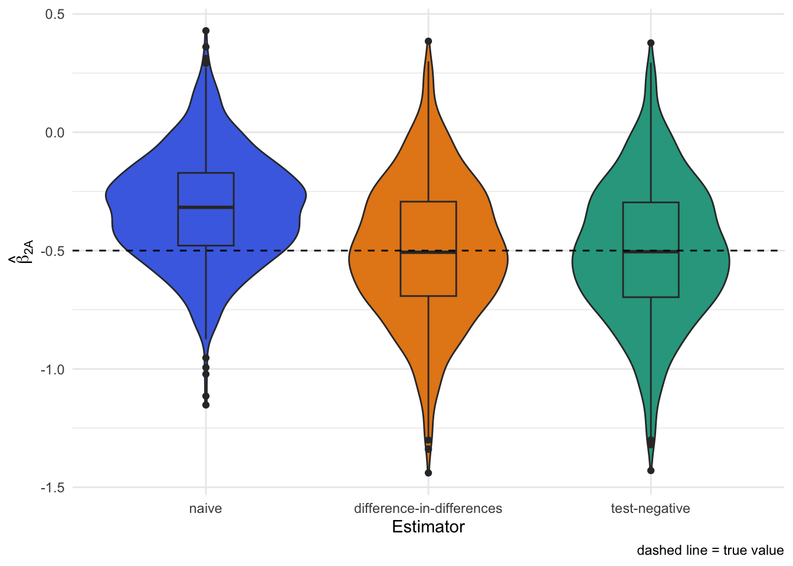
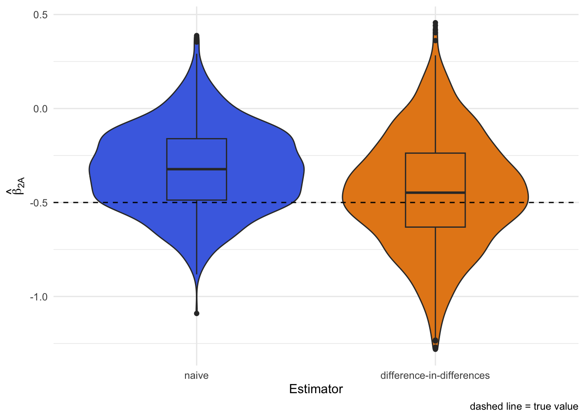

Note: I first wrote this as a working note for a colleague. Here is a cleaned-up version for anyone curious about how test-negative results can act as a negative control outcome to diagnose—and sometimes correct—unmeasured confounding in vaccine studies.
Why this simulation?
Observational evaluations of vaccines and other infectious disease interventions confront a common challenge: often only those who are motivated to seek care when sick receive a test. When these test-seeking behaviors share common causes with receiving a vaccine, our estimates of vaccine effectiveness may be biased. The idea explored here: using differences in testing negative between vaccinated and unvaccinated as a proxy for that shared bias. If unmeasured confounding affects both positive and negative tests in similar ways (an “equi-confounding” assumption), we can de-bias the vaccine effect on positives by differencing against the effect on negatives.
Setup
We define the following variables:
A: binary vaccination status (0/1)
X: measured covariate
U: unmeasured confounder that drives both testing and vaccination
T1: time to a negative test (a negative control outcome)
T2: time to a positive test (the outcome of interest)
C: time to right censoring due to other reasons (e.g. loss to follow up, administrative censoring)
R packages we will use:
Show R code
library(tidyverse)library(gt)library(gtsummary)library(tidycmprsk)library(survival)library(ggsurvfit)library(riskRegression)# Consistent palette and levels for estimators across plotstheme_set(theme_minimal())estimator_levels <-c("naive", "difference-in-differences", "test-negative", "proxy")estimator_palette <-c("naive"="#4A6FE3","difference-in-differences"="#E5881A","test-negative"="#2CA58D","proxy"="#8E4B9D")outcome_palette <-c("Test negative"="#00798C","Test positive"="#D1495B")
Data generation
We generate data under the following process:
\[
\begin{aligned}
U &\sim \text{Unif}(0,1) \\
X &\sim \text{Unif}(0,1) \\
A &\sim \text{Bern}(\text{expit}\{U + X\}) \\
T_1 &\sim \text{Exp}(\lambda_{10}\exp\{\beta_{1X} X + \beta_{1U}U\}) \\
T_2 &\sim \text{Exp}(\lambda_{20}\exp\{\beta_{2A} A + \beta_{2X} X + \beta_{2U}U\}) \\
C &\sim \text{Unif}(1, 3)
\end{aligned}
\]
Vaccination depends on both the measured (X) and unmeasured (U) covariate. Hazards for testing negative and positive also depend on those factors. Censoring happens uniformly between 1 and 3 time units. The causal hazard ratio for the effect of vaccination is given by \(\exp\{\beta_{2A}\}\). In reality, we observe time T which is the minimum of T1, T2, and C.
Show R code
generate_data <-function(n, b1x, b1u, b2a, b2x, b2u) { U <-runif(n) X <-runif(n) A <-rbinom(n, 1, plogis(U + X)) hazard1 <-0.04*exp(b1x * X + b1u * U) hazard2 <-0.02*exp(b2a * A + b2x * X + b2u * U) time1 <-rexp(n, rate = hazard1) time2 <-rexp(n, rate = hazard2) cens <-runif(n, 1, 3) time <-pmin(time1, time2, cens) status <-rep(0, n) status <-replace(status, time1 <= time2 & time1 <= cens, 1) status <-replace(status, time2 <= time1 & time2 <= cens, 2) status <-factor(status,levels =c(0, 1, 2),labels =c("Cens", "Test negative", "Test positive"))tibble(U, X, A, time1, time2, cens, time, status)}
We can also glance at the cumulative incidence curves for negative and positive tests:
Show R code
cif <-cuminc(Surv(time, status) ~1, data = example_df)ggcuminc(cif, outcome =c("Test negative", "Test positive"), linewidth =0.8) +aes(color = outcome, fill = outcome) +labs(x ="Time", y ="Cumulative incidence") +add_confidence_interval() +scale_color_manual(values = outcome_palette) +scale_fill_manual(values = outcome_palette) +guides(linetype ="none", fill ="none")

Naive approach (and why it is biased)
A common approach in observational studies estimates the effect of vaccination via the Cox model \[
\lambda(t | A, X) = \lambda_0(t) \exp(\beta_A A + \beta_X X)
\]
Applying this to our generated data above, we find:
Note that the true log hazard ratio for vaccination under our generation process is -0.5. Here, the naive estimate is -0.24 and is biased toward zero because of unmeasured confounding by U.
To verify the bias, we can run a Monte Carlo simulation and look at the distribution of estimates:

Using negative tests as a proxy for bias
Suppose the unmeasured confounder U reflects a certain tendency to seek care when ill regardless of whether the underlying illness is caused by the test-positive pathogen or something else. Then we might expect U acts similarly on testing behavior for other illnesses that produce similar symptoms (e.g. fever, congestion, etc.)1. How might we identify these “proxy” illnesses? Well, if symptoms are universally screened or recorded prior to ordering tests, then we can assume that everyone who receives a test but tests negative has such an illness.
We call this equi-confounding and in our data generation process above it would imply \[
\beta_{1U} = \beta_{2U}.
\] If we similarly assume that vaccine has no effect on any test-negative illnesses, then T1 is a classic negative outcome control and the hazard ratio for testing-negative reveals the degree of residual confounding.
We can then remove the bias from our original vaccine effectiveness estimate by taking the ratio of hazard ratios:
where \(\beta^*_{2A}\) comes from the cause-specific model for testing positive and \(\beta^*_{1A}\) from the model for testing negative, given by: \[
\begin{aligned}
\lambda_1(t | A, X) = \lambda_{10}(t) \exp(\beta^*_{1A}A + \beta^*_{1X} X) \\
\lambda_2(t | A, X) = \lambda_{20}(t) \exp(\beta^*_{2A}A + \beta^*_{2X} X)
\end{aligned}
\]
Note, this is similar to a difference-in-differences analysis on the multiplicative scale where testing negative takes the role of differences in the pre-period!
Using this approach to refine our previous estimate of the vaccine effect, we find:
Show R code
fit_neg_once <-coxph(Surv(time, status =="Test negative") ~ A + X, data = example_df)fit_pos_once <-coxph(Surv(time, status =="Test positive") ~ A + X, data = example_df)tbl_merge(list(tbl_regression(fit_neg_once), tbl_regression(fit_pos_once) ),tab_spanner =c("**Test negative**", "**Test positive**"))
Characteristic
Test negative
Test positive
log(HR)1
95% CI1
p-value
log(HR)1
95% CI1
p-value
A
0.17
-0.12, 0.46
0.2
-0.31
-0.76, 0.13
0.2
X
0.64
0.19, 1.1
0.005
0.36
-0.40, 1.1
0.4
1 HR = Hazard Ratio, CI = Confidence Interval
The de-biased estimate is the difference between the two vaccination coefficients2. In this run we get roughly -0.49, closer to the truth than the naive -0.24.
Monte Carlo simulation confirms the unbiasedness of this approach when equi-confounding holds:

Link to the classic test-negative design
If we subset to people who got tested and run a simple logistic regression of testing “positive vs negative” on vaccination, we recover the same value, -0.49 as above.
Show R code
tnd_fit_once <-glm( status =="Test positive"~ A + X,data =subset(example_df, status !="Cens"),family =binomial(link ="logit"))tbl_regression(tnd_fit_once)
Characteristic
log(OR)1
95% CI1
p-value
A
-0.49
-1.0, 0.05
0.075
X
-0.21
-1.1, 0.65
0.6
1 OR = Odds Ratio, CI = Confidence Interval
This is functionally equivalent to the classic test-negative design which only collects data from the tested.3
Monte Carlo simulation again shows the unbiasedness of test-negative design when equi-confounding holds:

When equi-confounding breaks
What if the unmeasured factor affects the testing positive outcome more than the test negative (or vice versa)? Then the difference-in-differences trick no longer removes all the bias.
Here we make U twice as influential for testing positive as for testing negative. Both the naive and difference-in-differences approaches now miss the true effect:

Using a negative control exposure as a check
We can sometimes detect this by adding another variable Z that is related to U but has no direct effect on test positive or test negative illness. We call this a negative control exposure.
Let’s add Z to our original data generation process and generate a new example when equi-confounding does not hold.
Show R code
generate_data_z <-function(n, b1x, b1u, b2a, b2x, b2u) { U <-runif(n) X <-runif(n) Z <-rbinom(n, 1, U) A <-rbinom(n, 1, plogis(U + X)) hazard1 <-0.04*exp(b1x * X + b1u * U) hazard2 <-0.02*exp(b2a * A + b2x * X + b2u * U) time1 <-rexp(n, rate = hazard1) time2 <-rexp(n, rate = hazard2) cens <-runif(n, 1, 3) time <-pmin(time1, time2, cens) status <-rep(0, n) status <-replace(status, time1 <= time2 & time1 <= cens, 1) status <-replace(status, time2 <= time1 & time2 <= cens, 2) status <-factor(status,levels =c(0, 1, 2),labels =c("Cens", "Test negative", "Test positive"))tibble(U, X, Z, A, time1, time2, cens, time, status)}example_z_df <-generate_data_z(n =1000,b1x =0.2,b1u =1.25,b2a =-0.5,b2x =0.2,b2u =2 )
We can fit a model for testing negative that includes Z; any association between Z and the negative test hazard flags residual confounding.
Show R code
fit_neg_z_once <-coxph(Surv(time, status =="Test negative") ~ A + X + Z, data = example_z_df)fit_pos_z_once <-coxph(Surv(time, status =="Test positive") ~ A + X + Z, data = example_z_df)tbl_merge(list(tbl_regression(fit_neg_z_once), tbl_regression(fit_pos_z_once) ),tab_spanner =c("**Test negative**", "**Test positive**"))
Characteristic
Test negative
Test positive
log(HR)1
95% CI1
p-value
log(HR)1
95% CI1
p-value
A
0.03
-0.34, 0.41
0.9
-0.69
-1.1, -0.25
0.002
X
-0.06
-0.64, 0.52
0.8
0.09
-0.65, 0.83
0.8
Z
0.49
0.16, 0.83
0.004
0.64
0.20, 1.1
0.004
1 HR = Hazard Ratio, CI = Confidence Interval
Using a negative control exposure for further de-biasing
You may now be wondering… could we use this additional information from Z to further de-bias our result? In fact, we can through an approach called proximal inference. But we’ll leave this for a future post.
Takeaways
Test-negative outcomes can act as a built-in negative control for unmeasured confounding when they represent other illnesses that share similar drivers as the focal illness.
The ratio of hazard ratios (positive vs negative) mirrors the classic test-negative odds ratio when equi-confounding holds.
If the assumption fails, adding a negative control exposure can flag residual bias and potentially correct it.
All code here is runnable and tweakable—change the coefficients, add time trends, or swap in splines to stress-test the idea.
Footnotes
Assuming, of course, the individual has no other outside knowledge of the source of their symptoms. Such as results from a rapid home test or contact with a previously tested case.↩︎
Note: difference-in-differences on the log scale is the same as a ratio of hazard ratios on the multiplicative scale↩︎
Indeed, one way to conceptualize the test-negative design is as a case-control study where cases and controls are concurrently sampled outcome-negative control outcome pairs. For more on this see: https://doi.org/10.1097/EDE.0000000000001926↩︎
![]()